ネパールについて

ネパール（ネパール：नेपाल[neˈpal]）、正式にはネパール連邦民主共和国は、南アジアの内陸国です。主にヒマラヤにありますが、
インドガンジス平野の一部も含まれています。推定人口は2640万人で、人口で48番目に大きい国であり、地域で93番目に大きい国であり、
北は中国、南、東、西はインドと国境を接していますが、バングラデシュはわずか27 km（17マイル）以内にあります その南東端と
ブータンは、インドのシッキム州によって分離されています。ネパールには、肥沃な平野、亜高山帯の森林に覆われた丘、地球上で最も高い地点である
エベレスト山を含む世界で最も高い10の山のうち8つを含む多様な地理があります。
カトマンズは首都であり、最大の都市です。ネパールは、ネパール語を公用語とする多民族国家です。 仏教の創始者であるゴータマ・ブッダは
、ネパール南部のルンビニで生まれました。ネパール北部の一部はチベットの文化と絡み合っていました。中央に位置するカトマンズ渓谷は、
インド・アーリア人の文化と絡み合っており、ネパールd羅として知られる繁栄したネワール連邦の拠点でした。 18世紀までに、
ゴルカ王国はネパールの統一を達成しました。シャー王朝はネパール王国を設立し、後にラージプートラナ王朝のもとで大英帝国と同盟を結んだ。
この国は植民地化されたことはありませんが、中国帝国とイギリス領インドの間の緩衝国家として機能しました。
ギャラリー
NEPAL FOR RELIGIOUS VISIT
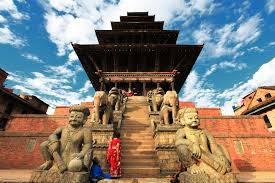 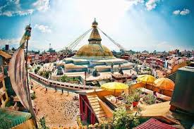 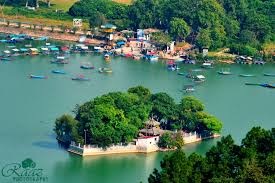
NEPAL FOR TREKKERS PARADISE
 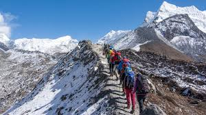
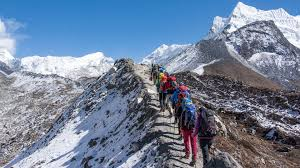
NEPAL FOR ADRENALINE JUNKIES
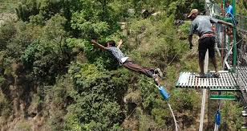 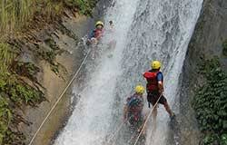 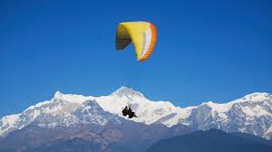 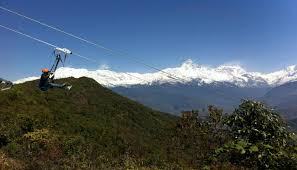 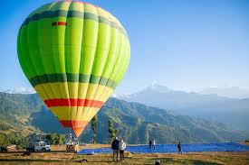 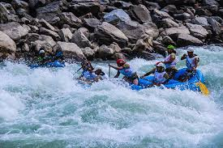 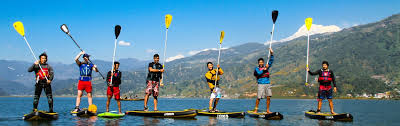